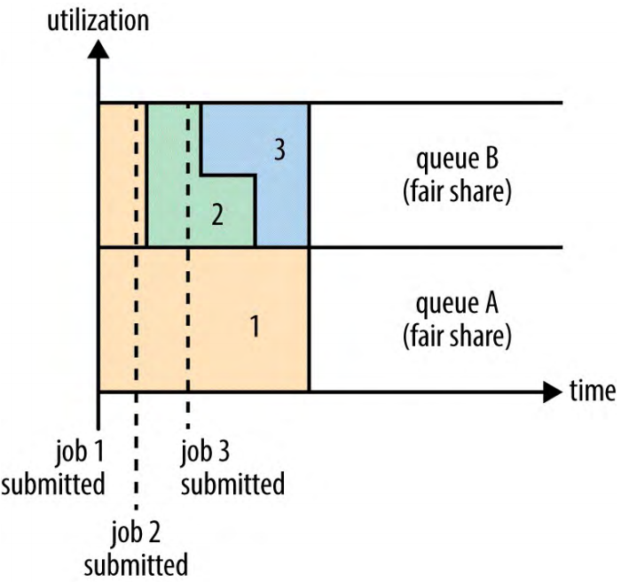

3、YARN调度（Scheduling in YARN）
理想情况下，YARN应用的资源请求会被马上满足。事实上，资源是有限的，在繁忙的集群上，通常应用的某些资源请求被满足前需要等待。YARN调度器（scheduler）的任务是根据一些定义的策略给应用分配资源。调度通常是困难的问题并且没有一个“最佳”策略，所以YARN提供了一些调度器和配置策略以供选择。
1、调度器选项（Scheduler Options）
YARN中可用三种调度器：FIFIO Scheduler，Capacity Scheduler（容量调度器），Fair Scheduler（公平调度器）。FIFO调度器把应用放进一个队列并且按照它们提交的顺序执行它们。队列中第一个应用的请求被首先分配；一旦它的请求被满足，就为队列中下一个应用服务，依此类推。
FIFO调度器的优点是容易理解并且不需要任何配置，但是对于共享集群（shared cluster）不合适。巨大的应用会用尽集群的资源，每个应用必须按顺序等待。在共享集群中使用容量调度器或者公平调度器是更好的选择。这两种调度器允许长时间运行的jobs及时地完成，也允许用户同时运行的小的临时（ad hoc）查询在合理的时间内获取返回结果。
使用容量调度器时，一个独立的专用队列允许小的job一旦在该队列提交就启动，尽管这是以牺牲整个集群的利用率为代价（因为这个队列的容量是为队列中的jobs保留的）。这意味着，使用这种调度器时，很大的应用消耗的时间会比使用FIFO调度器长。
使用公平调度器时，不需要保留一些量的容量，因为它会在所有运行的jobs之间动态平衡资源。在第一个（较大）的job启动时，它是唯一运行的job，所以它会占用所有的集群资源。当第二个（较小）job启动，它会被分配整个集群资源的一半，这样每个job就公平的共享了资源。注意，在第二个job启动和它公平共享到资源在时间上会有延后，因为它必须等待第一个job的某些containers完成以释放资源。在第二个较小job完成并且不再需要资源，较大的job又可以使用整个集群的资源了。整体效果是既有高的集群利用率并且能够及时地完成小的job。
2、容量调度器配置（Capacity Scheduler Configuration）
容量调度器允许沿着组织的边线共享一个Hadoop集群，每个组织都被分配了整个集群的一部分。每个组织被分配一个专门的队列，每个队列被配置为可以使用一定的集群资源。队列可以进一步按层次划分，这样每个组织内的不同用户能够共享该组织队列所分配的资源。在一个队列内，使用FIFO调度策略对应用进行调度。
一般，单个作业使用的资源不会超过其队列容量。如果，队列中有多个作业，并且仍然有可用的空闲资源，那么容量调度器可能会将空余的资源分配给队列中的作业，即使会超出这个队列的容量。这称为队列弹性（queue elasticity）。
在正常操作中，容量调度器不会通过强行中止来抢占容器（containers）。如果队列因为缺少需求而导致实际容量低于配置容量，后来在需求增加的时候，这个队列只能只能在抢占它资源的队列的容器完成时获得资源。通过配置队列的最大容量来防止它们抢占过多其它队列的容量可以减轻这种情况。但是这是以牺牲队列弹性为代价的，当然，通过反复试验（by trial and error）应该能得到一个合理的权衡。
假设有一个如下的队列层次：
root
├── prod
└── dev
├── eng
└── science
对应这个层次结构，下面的例4-1展示了一个简单的容量调度器配置文件，叫做capacity-scheduler.xml。它在root队列下定义了两个队列prod和dev，分别有总容量的40%和60%。某个特定队列的配置是通过的格式为yarn.scheduler.capacity.<queue-path>.<sub-property>属性设置完成的，其中<queue-path>是队列的层次路径（以点分隔），例如root.prod。
例 4-1、一个容量调度器的基本配置文件（A basic configuration file for the Capacity Scheduler）
<?xml version="1.0"?>
<configuration>
<property>
<name>yarn.scheduler.capacity.root.queues</name>
<value>prod,dev</value>
</property>
<property>
<name>yarn.scheduler.capacity.root.dev.queues</name>
<value>eng,science</value>
</property>
<property>
<name>yarn.scheduler.capacity.root.prod.capacity</name>
<value>40</value>
</property>
<property>
<name>yarn.scheduler.capacity.root.dev.capacity</name>
<value>60</value>
</property>
<property>
<name>yarn.scheduler.capacity.root.dev.maximum-capacity</name>
<value>75</value>
</property>
<property>
<name>yarn.scheduler.capacity.root.dev.eng.capacity</name>
<value>50</value>
</property>
<property>
<name>yarn.scheduler.capacity.root.dev.science.capacity</name>
<value>50</value>
</property>
</configuration>
队列dev被进一步划分为使用相同容量的eng队列和science队列。为了使dev队列在prod队列空闲时不会用尽集群资源，它的最大容量被设置为75%。换句话说，prod队列总会有集群资源的25%可以直接使用。因为没有为其它队列设置最大容量，其它队列可能会用尽所有可用的资源（eng队列和science队列可能会用尽dev队列的资源（最大为集群资源的75%），prod队列可能会用尽整个集群的资源）。
除了配置队列层次（hierarchies）和容量（capacities），还有一些其它的配置（单个用户或应用可以被分配的最多资源、同时可以运行的应用数量、队列的ACL（访问控制列表Access Control list）），参见官方文档。
2.1、队列放置（Queue placement）
把应用放置在队列的方式根据应用类型的不同而异。例如，在MapReduce中，通过设置属性mapreduce.job.queuename来指定使用的队列；如果指定的队列不存在，在提交时会返回一个错误；如果不指定队列，应用会被放到一个名为default的队列。
WARNING.指定应用的队列名时，对于容量调度器，队列名是层次名的最后一部分，因为完整的层次名称是不被识别的。
3、公平调度器配置（Fair Scheduler Configuration）
公平调度器旨在所有运行的应用都同等的共享集群资源。应用使用资源的公平分享可以是同一个队列内部也可以是多个队列之间。（注意：在公平调度器的表述中queue队列和pool池这两个概念是可以互换的）
图 4-4、用户队列间的公平分享（Fair sharing between user queues）

如图，两个用户A和B，都有自己的队列。首先A启动一个job，而B没有资源的需求，A获得所有的可用资源。然后B启动一个job而A的job仍然在运行，等待一段时间后这两个job平分了资源。后来B启动了它的第二个job，而另外两个jobs仍然在运行，这个job会和B的另一个job平分B的资源，而A仍然使用全部资源的一半。结果就是用户之间公平地分享了资源。
3.1、开启公平调度器（Enabling the Fair Scheduler）
使用中的调度器由配置项yarn.resourcemanager.scheduler.class决定。默认使用的调度器是容量调度器（而在一些Hadoop发行版本中默认使用的是公平调度器，例如CDH），通过修改yarn-site.xml文件中的yarn.resourcemanager.scheduler.class属性为要使用调度器的全限定类名（fully qualified classname）可以改变调度器，org.apache.hadoop.yarn.server.resourcemanager.scheduler.fair.FairScheduler。
3.2、队列配置（Queue configuration）
公平调度器通过从classpath加载分配文件fair-scheduler.xml（通过设置属性yarn.scheduler.fair.allocation.file可以更改文件名）进行配置。如果缺少配置文件，公平调度器会按照默认的方式运行：每个应用被放进以用户命名的队列中，这些队列在用户提交应用时动态创建。
每个队列的配置都在分配文件中指定。这允许像容量调度器那样的层次式配置。
例 4-2、公平调度器分配文件（An allocation file for Fair Scheduler）
<?xml version="1.0"?>
<allocations>
<defaultQueueSchedulingPolicy>fair</defaultQueueSchedulingPolicy>
<queue name="prod">
<weight>40</weight>
<schedulingPolicy>fifo</schedulingPolicy>
</queue>
<queue name="dev">
<weight>60</weight>
<queue name="eng" />
<queue name="science" />
</queue>
<queuePlacementPolicy>
<rule name="specified" create="false" />
<rule name="primaryGroup" create="false" />
<rule name="default" queue="dev.eng" />
</queuePlacementPolicy>
</allocations>
队列层级使用嵌套queue元素定义。所有的队列都是root队列的子队列，即使没有在配置文件中嵌套在root元素下。在这个例子中，dev队列被划分为eng队列和science队列。
队列可以有权重，用于公平分享的计算。在这个例子中，集群资源在队列prod和dev之间分配比例达到40:60时，分配被认为是“公平”的。队列eng和science没有被指定权重，所以它们平均划分资源。权重配置不必是百分比，只是权重加起来为100更简单直观。本例中，设置prod和dev队列的权重为2:3也是同样的效果。
注意，设置权重时，要记得默认队列和动态创建的队列（例如以用户名命名的队列）。这些队列没有在分配文件中配置，但是仍有默认的权重1。
队列可以有不同的调度策略。默认的队列调度策略可以使用顶层配置元素defaultQueueSchedulingPolicy设置，如果没有设置，就使用公平调度。尽管是公平调度器，也支持队列fifo策略和drf（主导资源公平，Dominant Resource Fairness）策略。对于特定队列可以使用该队列的schedulingPolicy元素覆盖默认的调度策略。
尽管本例中没有但是配置队列的最小和最大资源、最多运行应用数量也是支持的。最小资源设置不是硬性的限制，但是可以被调度器用作资源分配的优先级。如果两个队列是公平分享的，最小资源值设定最小的那个队列会被首先分配资源。
3.3、队列放置（Queue placement）
公平调度器使用基于规则（rule-based）的系统来决定把应用放进哪个队列。在例4-2中,queuePlacementPolicy元素包含了一个规则列表，这些规则轮流匹配直到匹配成功。第一条规则，sepcified，把应用放进它指定的队列，如果没有指定队列或指定的队列不存在，不会创建队列，这条规则不匹配，尝试下一条规则；规则primaryGroup，尝试把应用放进以用户的主要（primary）Unix group命名的队列；如果没有这个队列，不会创建这个队列，而是尝试下一条规则；规则default，是通吃的（catch-all）并且把应用放进队列dev.eng。
在指定的规则和默认行为一样时，queuePlacementPolicy配置的规则可以完全忽略，例如：
<queuePlacementPolicy>
<rule name="specified" />
<rule name="user" />
</queuePlacementPolicy>
换句话说，除非显式指定了队列，否则使用以用户名命名的队列（必要时创建）。
另一种简单的队列放置策略是所有的应用都放进同一个（默认）队列。这允许所有应用间（而不是用户间）公平分享资源。这种定义和如下配置等价：
<queuePlacementPolicy>
<rule name="default" />
</queuePlacementPolicy>
也可以不使用分配文件来设置文件放置策略，通过设置yarn.scheduler.fair.user-as-default-queue为false，应用会放进默认队列，而不是每个用户一个队列。另外，应该设置yarn.scheduler.fair.allow-undeclared-pools为false，这样用户就不能随意创建队列了。
3.4、抢占（Preemption）
当job被提交到一个繁忙集群的空队列时，job直等到集群上运行的jobs释放资源才能启动。为了确保job启动消耗的时间更加可预测，公平调度器支持抢占。
抢占允许调度器终止那些占用了超过公平分享范围资源的队列的容器，这样资源就能被分配给使用资源不到公平分享的量的队列。注意，抢占降低了整个集群的效率，因为终止的容器需要重新执行。
通过配置yarn.scheduler.fair.preemption为true可以全局地开启抢占。有两个抢占相关的超时设置：一个为最小分享、一个为公平分享，都是以秒为单位。默认，这两个时间没有设置，所有至少要设置一个来允许容器被抢占。
如果队列等待了最小分享抢占超时时间后仍没有获得最小的资源分享，调度器会抢占其它的容器。通过分配文件的顶层元素defaultMinSharePreemptionTimeout为所有队列设置默认的超时时间，通过每个队列嵌套minSharePreemptionTimeout元素为指定队列设定超时时间。
同样地，如果队列只有小于它应该公平分享的资源的一半，并且等待了超过公平分享抢占超时时间，调度器会抢占其它容器。通过分配文件顶层元素defaultFairSharePreemptionTimeout为所有队列设置超时时间，使用fairSharePreemptionTimeout针对特定队列设置超时时间。抢占阈值默认是0.5，通过顶层元素defaultFairSharePreemptionThreshold为所有队列设定阈值，使用fairSharePreemptionThreshold针对特定队列设置抢占阈值。
3.5、延时调度（Delay Scheduling）
所有的YARN调度器都试着满足请求本地性。在繁忙的集群上，如果赢取请求一个特定的节点，请求时很可能其它的容器在这个节点上运行。最明显的方针是直接方式本地性需求并在同机架分配容器。可是，通过实际观察等待一小段时间（不超过几秒）会显著增加在请求的节点上分配容器的机率，因而增加集群的效率。这种特征叫做延时调度，并且容量调度器和公平调度器都支持这一特征。
YARN集群的节点管理器定期（默认，1s）向资源管理器发送一个心跳请求。心跳请求携带了节点管理器运行的容器信息和可以用于新的容器的资源的信息，所以每次心跳对一个应用运行一个容器都是一次潜在的调度机遇。
使用延时调度时，调度器不是简单使用它获得的第一次调度机遇，而是在放松本地性限制前等待调度机遇出现的次数达到一个给定的最大值，然后使用下一次调度机遇。
对于容量调度器，延时调度通过设置yarn.scheduler.capacity.node-locality-delay为一个正整数（代表放松节点限制使用同机架任意节点前，调度器准备错过的调度机遇的次数）配置。
公平调度器也使用调度机遇次数来决定延时，尽管它被表示为集群大小比例。例如，设置yarn.scheduler.fair.locality.threshold.node为0.5意味着调度器在接受同机架另一个节点之前应该等待集群的一半节点都出现过调度机遇。有一个对应的属性yarn.scheduler.fair.locality.threshold.rack，用于设置替换请求机架接受另一个机架的阈值。
3.6、主导资源公平（Dominant Resource Fairness）
当只调度一种类型的资源（比如内存）时，容量或公平的概念是容易决定的。如果两个用户在运行应用，可以测量每个用户使用的内存量来比较这两个应用。可是，有多种资源类型时就复杂了。如果一个用户的应用需要的CPU多内存少另一个用户需要的内存多CPU少，这两个应用怎么比较呢？
YARN中的调度器解决这种问题的方式是观察每个用户的主导资源并把它作为集群使用的衡量标准。这种方法就叫主导资源公平，简称DRF。
假如集群有100个CPU、10TB内存。应用A请求容器（2CPUs，300GB），应用B请求容器（6CPUs，100GB）。A的请求是集群的（2%，3%），所以内存是主导资源。B的请求是（6%，1%），所以CPU是主导资源。因为B的容器请求在主导资源方面是A的两倍，在公平分享调度下它会被分配一半容器。
默认情况下，DRF没有启用，在资源计算时，只考虑内存并忽略了CPU。对应容量调度器通过设置配置文件capacity-scheduler.xml中的yarn.scheduler.capacity.resource-calculator为org.apache.hadoop.yarn.util.resource.DominantResourceCalculator使用DRF。对于公平调度器，设置分配文件顶层元素defaultQueueSchedulingPolicy为drf即可。